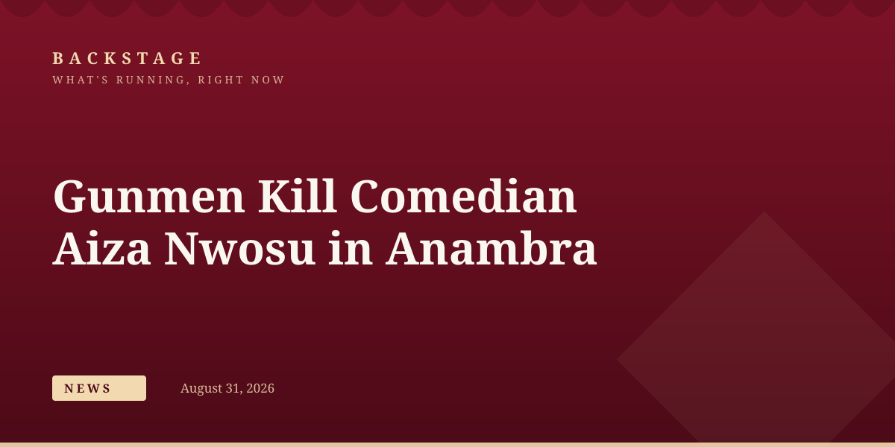
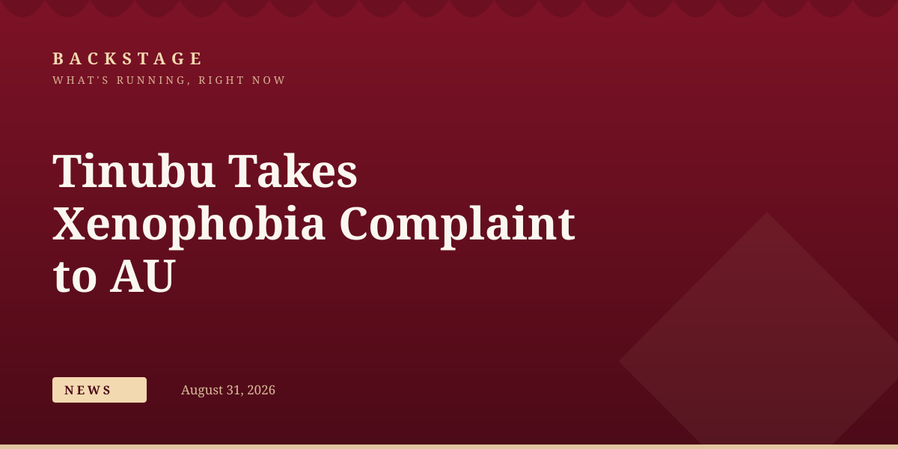
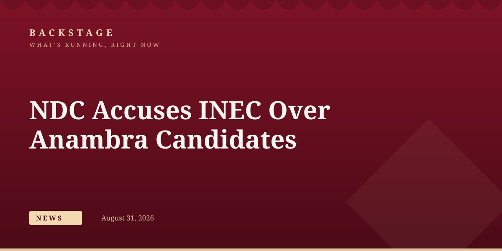
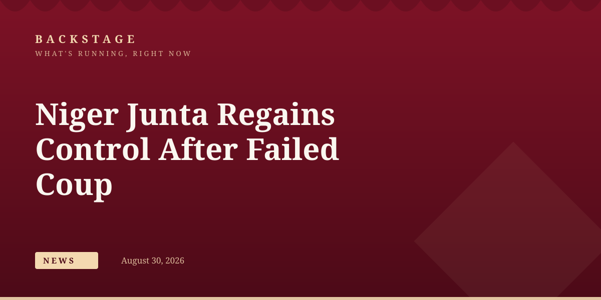

business
SEC Approves Dangote Refinery's N2.15trn IPO, Africa's Biggest Share Sale
4.1 billion shares at N525 each; IPO opens September 14, valued at $47bn.
business
The Securities and Exchange Commission has cleared Dangote Refinery to offer 4.1 billion shares at N525 each, in a deal that could raise N2.15 trillion and become Africa’s largest-ever listing.
business
4.1 billion shares at N525 each; IPO opens September 14, valued at $47bn.
news
Children lured from Nasarawa under a fake education scheme; 3 buyers arrested.
business
Reserves hit $54.08bn, surpassing CBN’s full-year projection by $3bn.
business
Part of a global restructuring cutting 3,300 jobs; drivers shift to Bolt and inDrive.
business
Jensen Huang says the open-source platform will remain open for all developers.
news
A coordinated rescue operation freed all 21 victims, with Tinubu vowing the kidnappers will face the full weight of the law.
business
Agriculture and services drove the gains, according to the National Bureau of Statistics.
news
Peter Obi says the timing of the three-week trip is insensitive given the crises facing Nigerians.
news
Mrs Yaganama Abdul fled a terrorist enclave amid rival faction clashes and surrendered to troops.
news
The VP’s warning follows Nigeria formally raising xenophobic attacks with the African Union.

news
Police confirmed the killings of comedian Isaac Nwosu and another man in separate attacks in Awka and launched a manhunt.

news
Tinubu has asked the AU to place the issue on the agenda of its January 2027 summit.

news
INEC denies the allegation, saying it has no legal authority to nominate or substitute candidates.
news
The Army’s account briefly posted memecoin content before being secured.
news
The rights lawyer says Nigerians have yet to see the benefits of subsidy removal.
news
Troops seized two AK-47 rifles hidden in a vehicle’s dashboard compartment.
news
Candidates from the 2020-2025 cycles risk forfeiture if they miss today’s deadline.
news
Dr Omolola Salako warns of rising, aggressive cancer cases in younger adults.
business
July inflows hit a record $947 million through formal channels.
business
The naira strengthened last week amid stronger FX liquidity.

news
Mutinying soldiers attacked the presidential palace and airport in Niamey before the junta regained control.

Nigerian Exchange Climbs as Market Capitalisation Adds ₦305bn

NPFL Unveils EuroMatch as Title Sponsor in $7.5m Deal Ahead of New Season

Tinubu Swears In Abel Enitan as New Head of Civil Service of the Federation

Military Says About 150 Terrorists Surrender as Pressure Mounts in North-East

Ogogo’s Family Announces August 31 Fidau as Nollywood Colleagues Pay Tribute
Story tip or correction? Reach the Backstage desk.